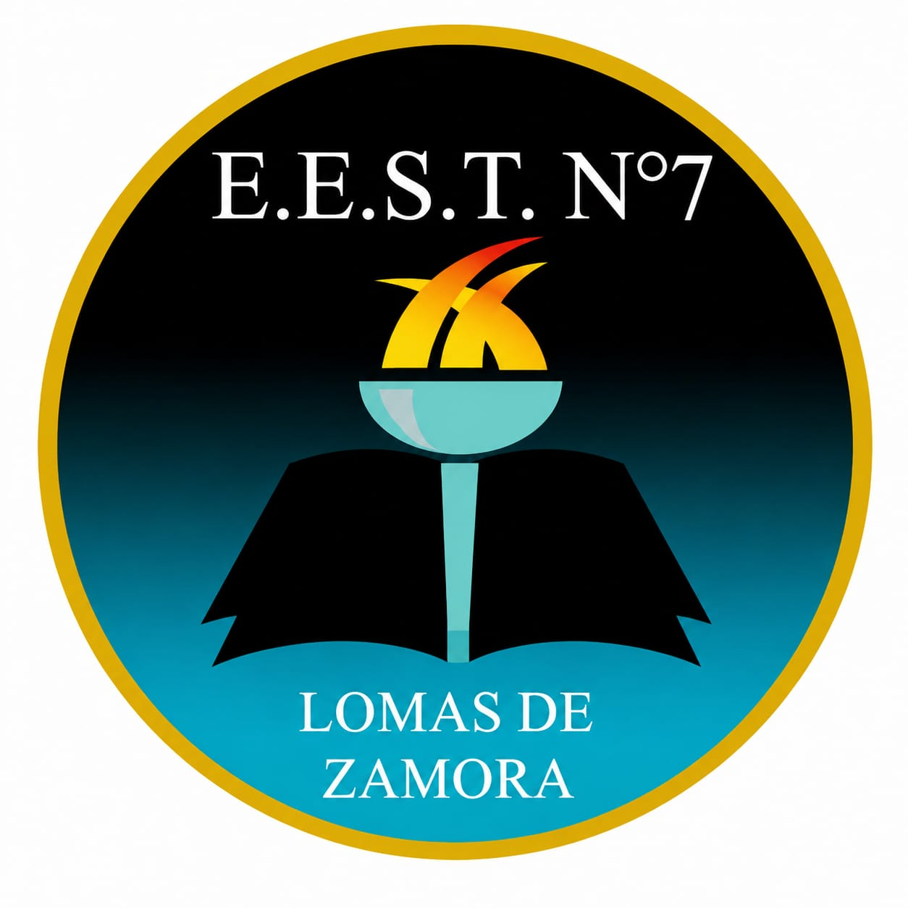

Formando técnicos de excelencia en Lomas de Zamora desde hace más de 110 años.
El AIC es un acuerdo creado en un marco flexible, de retroalimentación, que surge del intercambio de propuestas elaboradas por los distintos actores de la comunidad educativa (estudiantes, docentes, preceptores, EOE, auxiliares, familias y Equipo de Conducción) con el objetivo de respetar y cumplir ciertas pautas establecidas en normativa vigente y aquellos compromisos que hemos consensuado asumir para una mejor convivencia escolar y un adecuado clima de estudio y trabajo en la Institución.
Nuestra Institución entiende que esta construcción del acuerdo es posible con la participación efectiva de las/los estudiantes, siendo una práctica útil para la toma de decisiones de aquellos aspectos de la vida escolar que hacen al pleno ejercicio de los derechos como estudiantes y como personas que forman esta comunidad, en un marco democrático, de relaciones más igualitarias, buscando alcanzar la finalidad de habilitar a las y los adolescentes y jóvenes para el ejercicio pleno de la ciudadanía, para el trabajo y la continuidad de estudios superiores.
Más de 110 años preparando profesionales con las competencias que demanda el mundo laboral actual. Somos una institución líder en educación técnica, comprometida con la formación integral de nuestros estudiantes y su inserción exitosa en el mundo laboral.
Equipo directivo comprometido, docentes especializados con experiencia profesional y académica en cada área técnica, preceptores, gabinete de EOE y personal auxiliar que acompañan la trayectoria de cada estudiante.
Escuela de Educación Secundaria Técnica N° 7 es una escuela técnica urbana de gestión pública oficial, mixta, de jornada simple y de formación laica. Ofrece servicios educativos gratuitos en la modalidad de educación común en los niveles secundario y técnico (INET).
Hoy en Argentina el Instituto Nacional de Educación Tecnológica (INET) dispone de más de 1.600 instituciones de educación técnica en nivel secundario en las 24 jurisdicciones del país entre las que se encuentra nuestra institución.
Educación técnica de 7 años: 3 años de ciclo básico común y 4 años de especialización en la orientación elegida. Consta de dos ciclos: el ciclo básico con contenidos curriculares comunes, y el ciclo orientado de carácter especializado.
3 años comunes a todas las tecnicaturas. Formación fundamental donde priorizamos el HACER Y REFLEXIONAR SOBRE LO QUE SE HACE, con talleres y laboratorios desde el primer día.
Desarrollo de software, aplicaciones web y sistemas de gestión. Lógica, bases de datos y tecnologías de vanguardia con proyectos reales desde el primer año.
Esta tecnicatura forma egresados capaces de diseñar, desarrollar, mantener y mejorar software para diversas plataformas. Capacita para analizar requerimientos, corregir errores, documentar procesos y trabajar en equipo.
Creación audiovisual, diseño digital, animación y síntesis de imagen para medios digitales. Producción integral de contenidos con herramientas profesionales.
Estrategias formativas integradas en la propuesta curricular para que los estudiantes consoliden, integren y amplíen las capacidades y saberes del perfil profesional.
Se inició la obra que transformará el subsuelo de la escuela en un espacio educativo y tecnológico orientado al arte y al diseño. El proyecto contempla un estudio de cine y fotografía, una sala equipada con impresoras 3D, un sector de proyección, además de aulas, talleres y sanitarios accesibles.
La intervención permitirá ampliar la capacidad de la institución y fortalecer la formación de los estudiantes en disciplinas vinculadas a la producción audiovisual y la innovación tecnológica.
Las obras se extienden sobre la calle Manuel Acevedo, entre Darragueira y Cabrera, y buscan extender cursos para el ciclo lectivo 2026.
El intendente Federico Otermín recorrió la muestra anual y conversó con los estudiantes que presentaron producciones innovadoras vinculadas a la electrónica, la sustentabilidad, los multimedios, el cine, el diseño gráfico y la comunicación.
Los y las estudiantes presentaron proyectos pedagógicos desarrollados durante todo el año lectivo: maquetas, máscaras, conexiones eléctricas, procesos de fabricación, ecoladrillos, hornos solares, invernaderos, pantallas LED, autos eléctricos, centrales meteorológicas, infografías, cortometrajes, páginas web, collage y radio en vivo.
La escuela cuenta con una radio escolar que funciona gracias al Programa de Medios Digitales en la Escuela. Durante la visita de las autoridades, se recorrió este espacio y se dialogó con estudiantes y docentes sobre la importancia de contar con espacios adecuados y modernos para desarrollar nuevas experiencias de aprendizaje.
Las mejoras edilicias están estipuladas en el marco del proyecto "Escuelas a la Obra". Además de la ampliación del subsuelo, se realizan mejoras estructurales en toda la institución, con el objetivo de crear más aulas y servicios para docentes y estudiantes.
Los estudiantes trabajan en cortometrajes, cine, diseño gráfico y comunicación, con acceso a un estudio de cine y fotografía en el nuevo subsuelo.
Proyectos como ecoladrillos, hornos solares e invernaderos forman parte de la formación integral y el compromiso ambiental de la escuela.
Pantallas LED, autos eléctricos, centrales meteorológicas y una sala de impresoras 3D son algunos de los proyectos que se desarrollan en la institución.
La radio escolar permite a los estudiantes producir y transmitir contenido en vivo, desarrollando habilidades de comunicación y trabajo en equipo.
Desarrollo de aplicaciones web, sistemas de gestión y proyectos de software con tecnologías actuales.
Animación, diseño digital, infografías y producción de contenidos para medios digitales con herramientas profesionales.
Completá el formulario para iniciar tu inscripción:
Ir al Formulario de Inscripción✉️ eet7lz@yahoo.com.ar
📍 Manuel Acevedo 1864, Banfield, Lomas de Zamora
📸 Instagram: @tecnica7ldz
Turno Mañana: 7:30 a 12:30 hs
Turno Tarde: 13:30 a 18:30 hs
Jornada simple. Educación laica y gratuita.